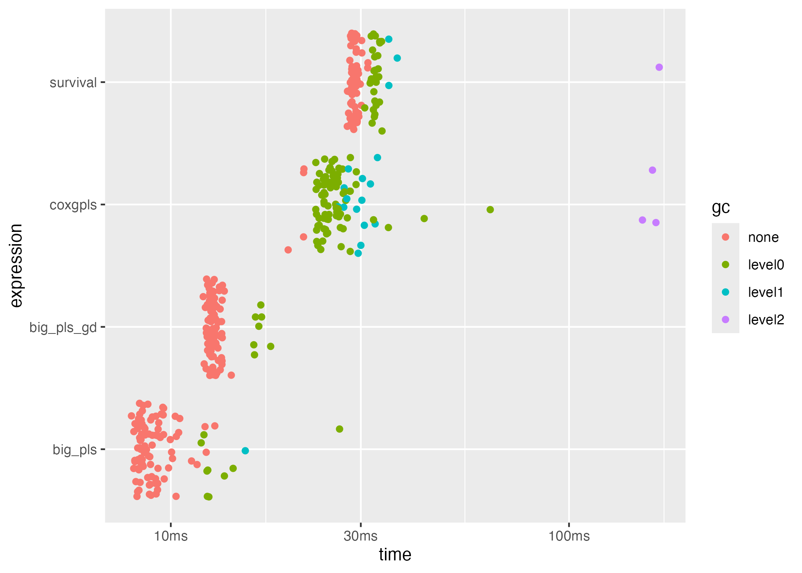

Benchmarking bigPLScox
Frédéric Bertrand
Cedric, Cnam, Parisfrederic.bertrand@lecnam.net
2025-11-15
Source:vignettes/bigPLScox-benchmarking.Rmd
bigPLScox-benchmarking.RmdMotivation
High-dimensional survival datasets can be computationally demanding.
bigPLScox implements algorithms that scale to large
numbers of predictors and observations via component-based models,
sparse penalties, and stochastic gradient descent routines. This
vignette demonstrates how to benchmark the package against baseline
approaches using the bench package.
We focus on simulated data to illustrate reproducible comparisons
between the classical coxgpls() solver, other big-memory
counterparts, and the survival::coxph() implementation.
Setup
The examples below require a recent version of bench together with survival.
The helper dataCox() simulates survival outcomes with
right censoring. We work with a moderately sized problem here, but
larger values for n and p can be used to
stress test performance.
set.seed(2024)
sim_design <- dataCox(
n = 2000,
lambda = 2,
rho = 1.5,
x = matrix(rnorm(2000 * 50), ncol = 50),
beta = c(1, 3, rep(0, 48)),
cens.rate = 5
)
cox_data <- list(
x = as.matrix(sim_design[, -(1:3)]),
time = sim_design$time,
status = sim_design$status
)
X_big <- bigmemory::as.big.matrix(cox_data$x)Running the benchmark
We compare the classical Cox proportional hazards model with
coxgpls() and the two big_pls_cox() solvers.
The bench::mark() helper executes the estimators multiple
times and records timing statistics alongside memory usage
information.
bench_res <- bench::mark(
coxgpls = coxgpls(
cox_data$x,
cox_data$time,
cox_data$status,
ncomp = 5,
ind.block.x = c(3, 10)
),
big_pls = big_pls_cox(cox_data$x, cox_data$time, cox_data$status, ncomp = 5),
big_pls_gd = big_pls_cox_gd(X_big, cox_data$time, cox_data$status, ncomp = 5, max_iter = 200),
survival = coxph(Surv(cox_data$time, cox_data$status) ~ cox_data$x, ties = "breslow"),
iterations = 100,
check = FALSE
)
bench_res$expression <- names(bench_res$expression)
bench_res
#> # A tibble: 4 × 6
#> expression min median `itr/sec` mem_alloc `gc/sec`
#> <chr> <bch:tm> <bch:tm> <dbl> <bch:byt> <dbl>
#> 1 coxgpls 19.4ms 20.7ms 48.0 30.97MB 480.
#> 2 big_pls 130.1ms 144ms 6.96 4.34MB 0
#> 3 big_pls_gd 14ms 14.4ms 68.1 6.41MB 13.9
#> 4 survival 27.5ms 28ms 35.6 13.39MB 24.8
bench_summary <- bench_res[, c("expression", "median", "itr/sec")]
bench_summary
#> # A tibble: 4 × 3
#> expression median `itr/sec`
#> <chr> <bch:tm> <dbl>
#> 1 coxgpls 20.7ms 48.0
#> 2 big_pls 144ms 6.96
#> 3 big_pls_gd 14.4ms 68.1
#> 4 survival 28ms 35.6The resulting tibble reports elapsed time, memory allocations, and
garbage collection statistics for each estimator. The
itr/sec column is often the most useful indicator when
comparing multiple implementations. The bench_summary
object summarises the median runtime and iterations per second.
Visualising the results
bench provides ggplot-based helpers to visualise the
distributions of elapsed and memory usage.
plot(bench_res, type = "jitter")
Additional geometries, such as ridge plots, are available via
autoplot(bench_res, type = "ridge").
Exporting benchmark results
Use the function write.csv() to store the benchmarking
table as part of a reproducible pipeline. For larger studies consider
varying the number of latent components, sparsity constraints, or the
dataset dimensions.
if (!dir.exists("inst/benchmarks/results")) {
dir.create("inst/benchmarks/results", recursive = TRUE)
}
write.csv(bench_res[,1:9], file = "inst/benchmarks/results/benchmarking-demo.csv", row.names = FALSE)Reusing the benchmarking scripts
The package also ships with standalone scripts under
inst/benchmarks/ that mirror this vignette while exposing
additional configuration points. Run them from the repository root
as:
Rscript inst/benchmarks/cox-benchmark.R
Rscript inst/benchmarks/benchmark_bigPLScox.R
Rscript inst/benchmarks/cox_pls_benchmark.REach script accepts environment variables to adjust the problem size
and stores results under inst/benchmarks/results/ with
time-stamped filenames.